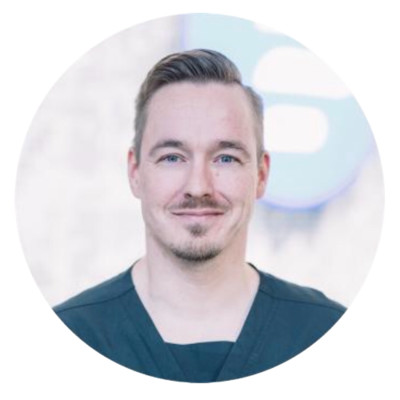

Simo Nortunen
Ortopedian ja traumatologian erikoislääkäri
Olen koulutukseltani lääketieteen tohtori ja työskentelen Pihlajalinna Hiirosessa ja Mehiläinen Oulussa ortopedian ja traumatologian erikoislääkärinä. Erityisesti olen perehtynyt polven, lonkan ja olkapään vammojen sekä näiden jälkitilojen hoitoon.
Nykyisin hoidan paljon myös urheilijoiden ja aktiiviliikkujien rasitusvaivoja ja -vammoja. Niiden lisäksi hoidan myös kroonisempia olkapään ja alaraajan jänne- ja nivelrikkovaivoja. Erityisosaamistani on tähystys-/nivelkirurgian lisäksi alaraajan luisten kehityshäiriöiden ja vamman jälkeisten virheasentojen hoito.
- check Pohjois-Suomen laajin kokemus lonkan tähystyskirurgiasta. Urheilijan lonkkavammat, rakenteelliset lonkkaongelmat.
- check Aikuisten ja lasten polven etu- ja takaristisiderepeämät, multiligamenttivammat, polvilumpion sijoiltaanmenot ja nivelkierukkavammat.
- check Säären ja reiden asentovirhekirurgia eli osteotomialeikkaukset
- check Olkaseudun vammat, olkanivelen sijoiltaanmenot ja kiertäjäkalvosimen repeämät
Lääketieteen tohtori
2018
Lääketieteen lisensiaatti
2005